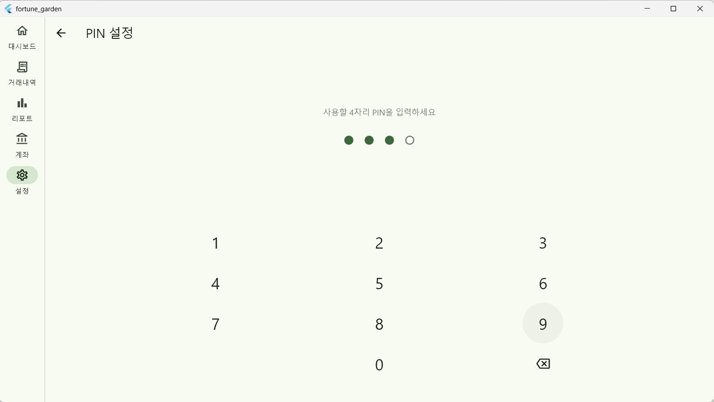
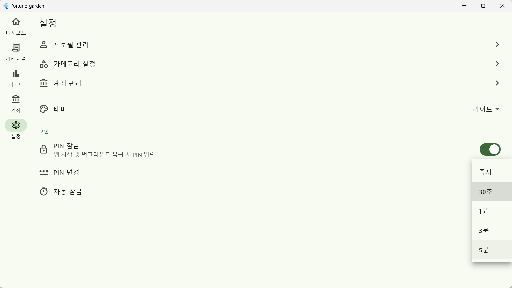

Overview
작업 개요
대상 기능
앱 전역 PIN 잠금 (Security)
기존 상태
DB 스키마만 존재, 실제 잠금 화면 및 로직 부재
구현 내용
PIN 설정/변경/해제, 자동 잠금, SHA-256 보안 적용
추가 패키지
crypto (기존 선언됨)
Part A — Implementation Strategy
구현 방식 결정: 오버레이 vs 라우트
보안 무결성을 위해 라우트 리다이렉션 대신 오버레이(최상위 위젯 교체) 방식을 채택했습니다.
01
라우트 방식의 한계
redirect 로직이 초기 프로필 설정(/setup)과 충돌하며, 뒤로가기
제스처를 통한 우회 위험이 있습니다.
02
오버레이 방식의 장점
MaterialApp.router 자체를 조건부로 렌더링하여 라우터와 독립된
완전한 잠금을 보장합니다.
// app.dart — 잠금 상태에 따른 원천 분기 if (!pinState.isLoading && pinState.isLocked) { return MaterialApp(home: PinScreen(mode: PinScreenMode.unlock)); } return MaterialApp.router(routerConfig: router, ...);
Part B — Logic & Security
핵심 로직 (pin_notifier.dart)
B1. SHA-256 기반 PIN 보안
사용자의 PIN은 평문으로 저장되지 않으며, 단방향 해시 함수를 통해 안전하게 관리됩니다.
String _hashPin(String pin) { final bytes = utf8.encode(pin); return sha256.convert(bytes).toString(); }
B2. 자동 잠금 및 생명주기 연동
AppLifecycleListener를 활용하여 백그라운드 전환 시점을
기록하고, 복귀 시 설정된 임계 시간(auto_lock_seconds) 초과 여부를
확인합니다.
onBackground() ──> 현재 시각 기록 (_backgroundTime)
onForeground() ──> 경과 시간 계산
if (elapsed >= limit) state.isLocked = true;
Part C — UI Components
UI 및 인터랙션 디자인


C1. PinScreen 3대 동작 모드
| 모드 | 진입 경로 | 핵심 단계 |
|---|---|---|
unlock |
앱 시작/복귀 | PIN 입력 → 해시 비교 후 잠금 해제 |
setup |
설정 토글 ON | PIN 입력 → 동일 PIN 재입력 확인 (신규 등록) |
change |
PIN 변경 탭 | 기존 PIN 확인 → 새 PIN 입력 → 재입력 확인 |
C2. 설정 화면(Settings) 연동
- PIN 활성화: SwitchListTile 연동 및 setup 모드 호출
- 자동 잠금 시간: 즉시/30초/1분/3분/5분 선택지 제공 (StreamBuilder 구독)
- 상태 분기: PIN 비활성화 시 '변경' 및 '자동 잠금' 항목을 UI에서 자동 은닉
Part D — Changed Files
변경 파일 목록
| 파일 경로 | 유형 | 변경 내용 요약 |
|---|---|---|
lib/presentation/providers/pin_notifier.dart
|
신규 | StateNotifier 기반 PIN 상태 관리 및 보안 로직 |
lib/presentation/screens/pin/pin_screen.dart
|
신규 | 숫자 키패드 및 4자리 도트 애니메이션 UI |
lib/app.dart |
수정 | AppLifecycleListener 추가 및 잠금 상태 분기 처리 |
lib/presentation/screens/settings/settings_screen.dart
|
수정 | PIN 설정 UI 및 자동 잠금 시간 설정 추가 |
Part E — Backlog
미완료 작업 (우선순위)
- 대시보드 통계 시각화: DonutChart 및 BarChart 컴포넌트 개발
- 전체 화면 QA: SCR-003~011 기능 누락 및 예외 상황 점검
Comments